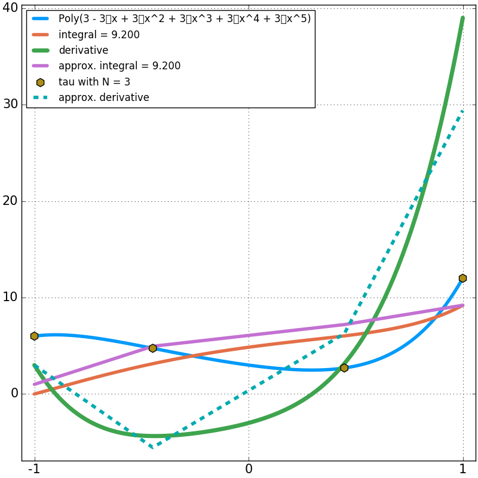

Example 3¶
In the third example, we approximate the derivative of a function by Approximating Derivatives.
Test 3a¶
In this test:
\[y(x) = 3x^2-3x+3\]

- We are able to determine the derivative exactly when they are linear functions is \(N = 3\)
Test 3b¶
In this test we increase the order of y(x) to:
\[y(x) = 3x^3 + 3x^2-3x+3\]

- When the derivative function becomes nonlinear
- We can no longer calculate it exactly everywhere
- There are only \(N_{t+1} = 4\) node points
- To calculate the derivative exactly we would need an \(∞\) amount of \(N_{t+1}\)
- We are still calculating the integral exactly and should be able to with \(N = 3\) until \(x^5\)
Test 3c¶
In this test we increase the order of y(x) to:
\[y(x) = 3x^4 + 3x^3 + 3x^2-3x+3\]

- We are still calculating the integral exactly and should be able to with \(N = 3\) until \(x^5\)
Test 3d¶
In this test we increase the order of y(x) to:
\[y(x) =3x^5 + 3x^4 + 3x^3 + 3x^2-3x+3\]

- We are still calculating the integral exactly with \(N = 3\)!!
- The percent error is = 0.000000000000000000 %
Test 3e¶
In this test we increase the order of y(x) to:
\[y(x) =3x^6 + 3x^5 + 3x^4 + 3x^3 + 3x^2-3x+3\]

- As expected, we are not still calculating the integral exactly with \(N = 3\)!!
- The percent error is = -1.818181818181822340 %